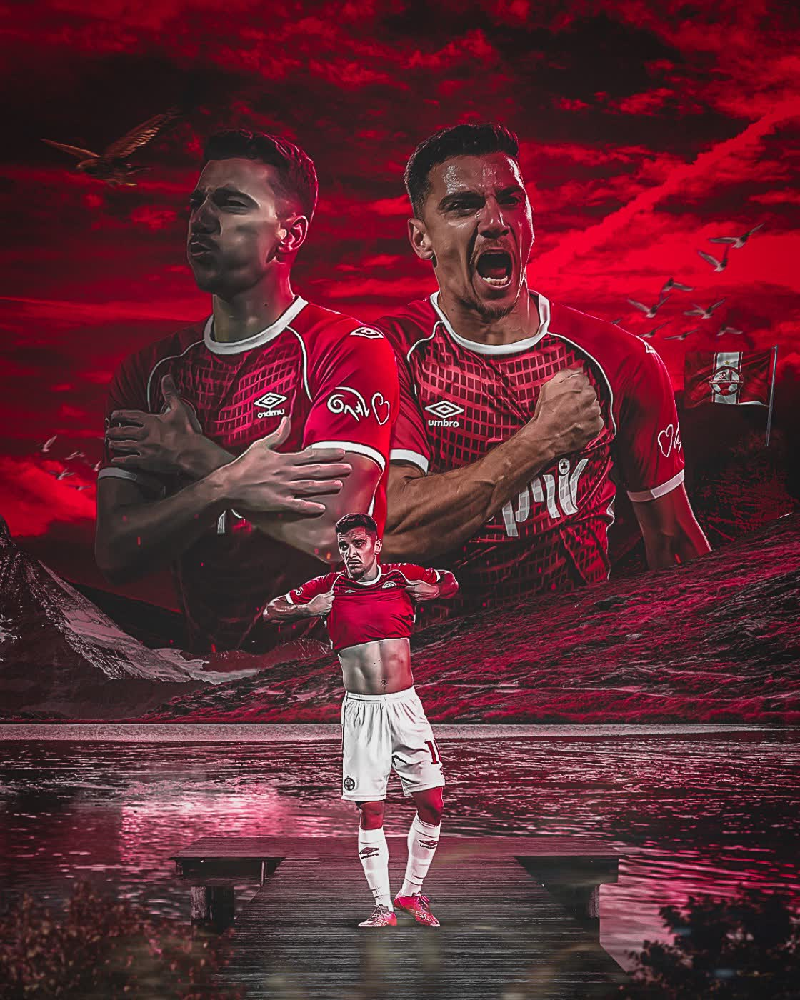

שלב 01
שיחת מכירה
מבינים את המוצר, הקהל והמטרה — לפני שמדברים על תסריט.
שלב 02
הצ״מ + הסכם
הצעת מחיר מסודרת, הסכם תקשורת ומקדמה — בלי הפתעות באמצע.
שלב 03
תסריט + קונספט
אישור קונספט אחד ברור — ואז לא חוזרים אחורה.
שלב 04
סטוריבורד
כל שוט מפורק ומאושר מראש. 3 סבבי תיקונים.
שלב 05
הנפשה + עריכה
זה הרגע שהמוצר הופך לסרטון. 3 סבבי תיקונים נוספים.
שלב 06
מסירה
קובץ סופי, מוכן לפרסום — בכל פורמט שצריך.


